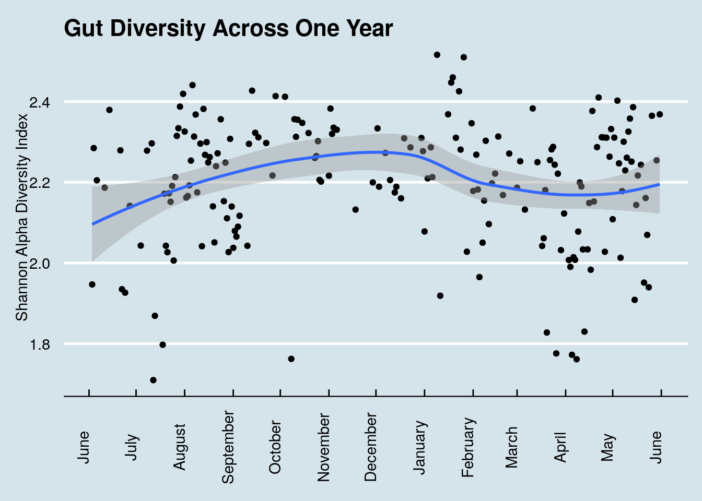
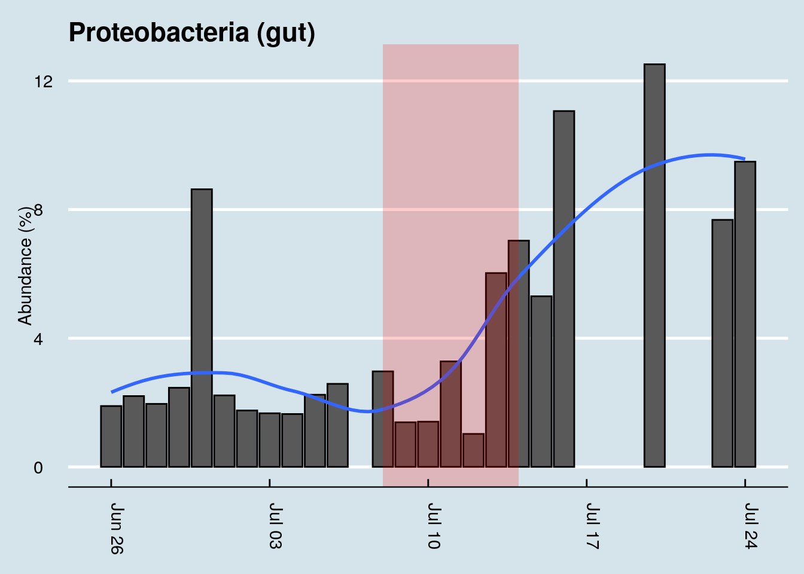
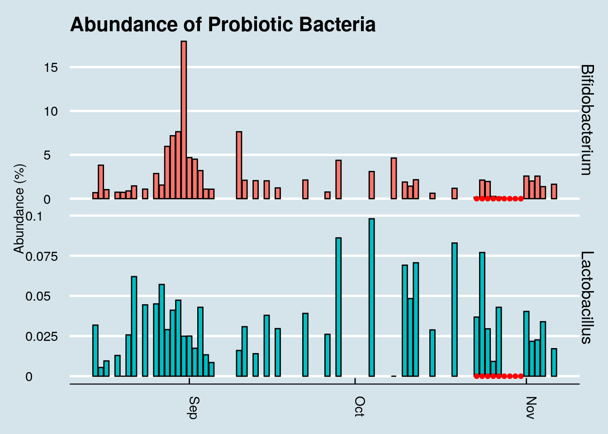
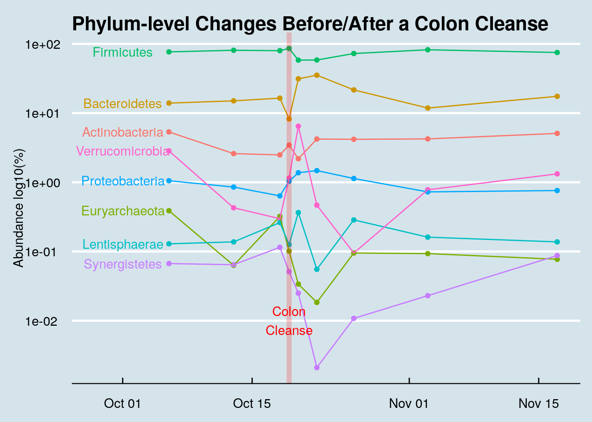
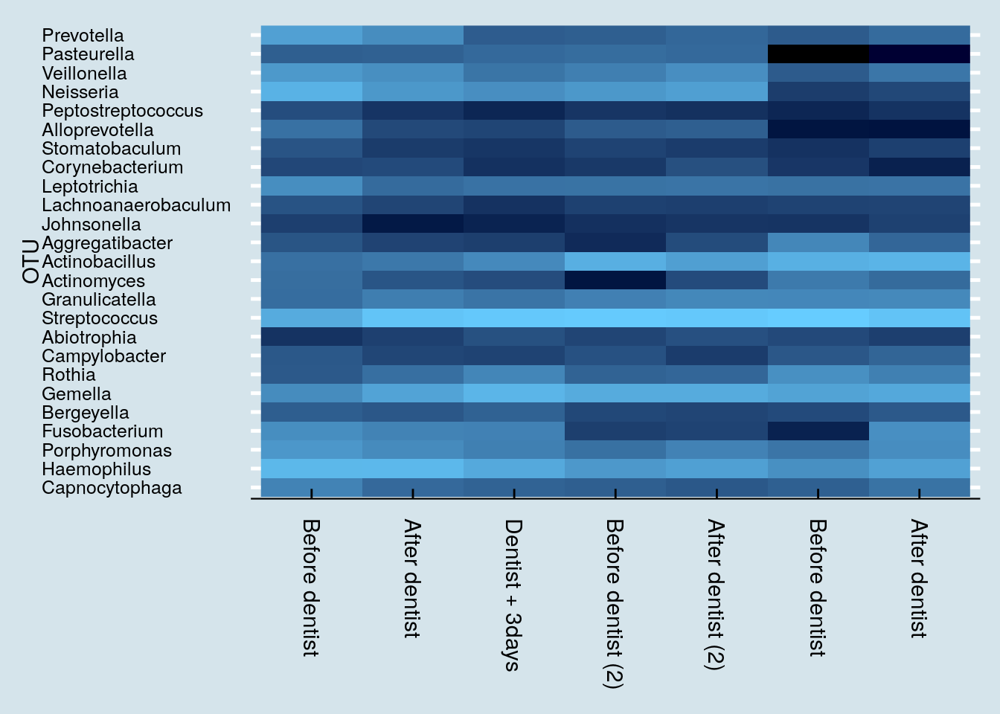
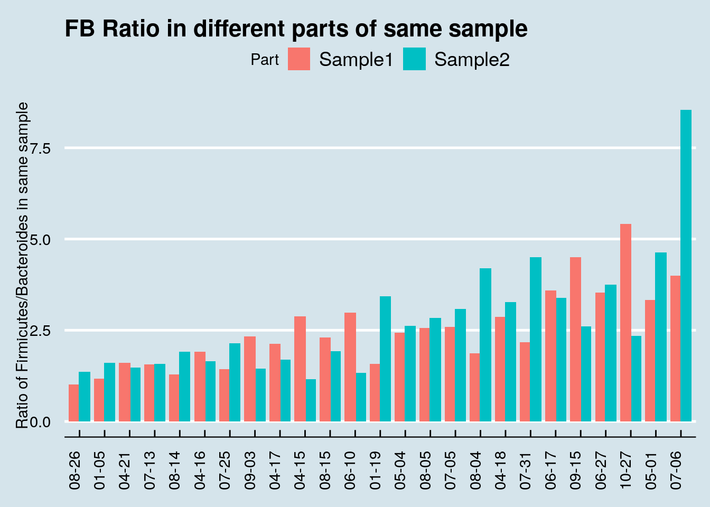

12 My Experiments
Microbe numbers shift daily in response to your environment, so a single sample won’t give much more than a brief snapshot at a single point in time. Here are some of the experiments I’ve tried on myself, in over 600 tests since 2014. What happens in your case?
12.1 Summary of My Experiments
During the period from 2014 through early 2019, I sequenced over 600 samples of my microbiome. Inspired by the experiment in a 2014 paper by David Lawrence1, during most of that time I also carefully tracked the food I ate, my sleep, and other variables like activity or location. Most of my near-daily samples were of my gut, but I also regularly tested my skin, nose, and mouth. Since I’m generally healthy, I didn’t have a specific goal in mind other than to try to understand better what these microbes are doing, so many of my tests were taken while undergoing simple experiments, like eating a specific type of food or visiting a new location. While not necessarily up to the rigorous standards of a formal scientific trial, these “n of 1” studies on myself helped me discover several new interesting facts about my own microbiome, many of which appear to contradict other published studies. In addition, hundreds of people sent me their own test results, letting me compare many different microbiomes. And of course, I also followed the latest developments in scientific publications and the general press as I eagerly tried to learn more.
What follows is a brief overview of some of the key things I learned.
- The microbiome is highly variable from day to day, often moving in ways that appear indistinguishable from random.
- Broad trends are there if you look closely. I found many intriguing new results.
- It is possible to change your microbiome in specific circumstances.
- People’s microbiomes are frustratingly different from one another. A feature that seems to be true about one person may not apply to another.
12.1.1 Diversity
The general consensus is that diversity is good: a greater variety of microbes ensures more resilience against the daily threat of invaders. Many people, after taking just one test, often feel either reassured that their diversity is “good” or disappointed that it’s “bad”. But I find that day-to-day variability is high enough that it’s almost never useful to use a single result. For example, here’s my diversity during a typical week: (Figure 12.1))
If Monday were my only test, I may have been disappointed with my 1.83 score. Wait another day or two and, with no significant changes in diet, I was up to 2.29 – before plunging to 1.78 by the weekend. Moral: don’t take a single result too seriously.
To get a sense of how much diversity can vary over a year (Figure 12.2))

12.2 Kefir and the Microbiome
Everyone interested in the microbiome eventually has to check out kefir. Google the phrase “one of the most potent probiotic foods available” and you’ll find kefir in all the top results. A recent BBC documentary that tested people after consuming different types of “gut-friendly” foods found it had by far the biggest effect. My interest piqued when, after my disappointment with kombucha, I spoke with a man who happened to mention his good luck with kefir as a solution to his many gut issues. On a doctor’s recommendation, he tried kefir for a number of years with limited success, until — frustrated with the $3/day expense of buying it at Trader Joe’s — he began making it himself at home. “What a difference!” he claimed.
Did it work for me? Yes! I found a very noticeable change in my gut microbiome — the most significant I’ve seen among my many experiments. Look at my daily levels of Leuconostoc, a prodigious synthesizer of Vitamin K known to be found in kefir. (Figure 12.3)

The blue dots in the chart are days when I drank kefir. Since I sample near-daily over the entire chart, we can see that both of these taxa suddenly appeared shortly after I began to consume kefir. I had almost none beforehand. Also note that the levels seem to dip when I skip drinking for a few days, such as during my business trips out of town in mid-March and another in early-April.
So apparently it has a big effect on the microbiome. What is this stuff anyway?
The first thing to know about kefir is the pronunciation. Say “Keh-FEAR”, with the accent on the second syllable, not “KEE-fur” or “kEH-fir”. The Russian origin of the term is a reminder of a time in the distant past when — it’s unclear exactly where or how — the first batch was prepared and then passed along, its microbial components shared from person to person until it reached today’s status as a popular drink you can buy in most grocery stores.
Making it at home brings more than just financial benefits. Commercially-purchased drinks are subject to unavoidable regulatory, shelf-life, and consistency contraints that matter for successful business, but not necessarily for nutrition. More importantly, if you believe like I do that microbes are highly-customized to our environments, making at home will ensure that the kefir is well-adapted to your own personal microbial environment. The batch that survives and thrives in your kitchen will have proven its ability to withstand whatever conditions you face there.
Making it yourself is surprisingly easy. It begins with a bundle of the component microbes, a cauliflower-shaped substance usually called the “grain” or “seed” that looks like Figure 12.4

Instruction books often tell you to be careful how you handle the grains, but I find them robust enough that I pick them up with my bare fingers. I drop them into a glass of milk left I leave sitting on the counter overnight and — voila! — twenty four hours later, the liquid has turned into kefir. Pull out the kefir grains from that glass, plop it into another, and you’re all set for tomorrow’s batch. Unlike yogurt, which requires heating and a stable temperature, kefir doesn’t appear to care how it’s handled, so long as you keep it at room temperature and can wait for twenty four hours. The reaction might vary by a few hours if the room is a bit colder or warmer, but otherwise I find it surprisingly consistent. Just set and forget.
I found that the only hard part is getting started. Once you have the grains, making more kefir is easy, but where do you get the grains in the first place? It’s supposedly possible to make them from scratch using a goat-hide bag filled with pasteurized milk and the intestinal flora of a sheep, but I haven’t tried that myself. I’m told it works so long as you shake every hour and maintain a constant temperature.
You can order some starter grains online for under $25, but for shipping purposes the manufacturers generally give them to you in a freeze-dried form that requires a week or so of preparation before the microbes are fully alive and kicking out drinkable quantities of kefir.
I got mine by asking around until I found a neighbor who had been brewing his own. Anyone who makes homemade kefir will be happy to give you some extra grains. The fermentation process causes the grains to multiply, and you will find yourself throwing them out regularly.
The grains themselves contain a combination of lactic acid bacteria (Lactobacillus, Lactococcus, Leuconostoc), acetic acid bacteria (Acetobacter), and yeast, clumped together with casein (milk proteins) and complex sugars in a type of carbohydrate molecule called kefiran. The nutritional content apparently varies depending on fermentation time and other factors, but there’s a lot of good stuff in there2 (Figure 12.5).

A rigorous microbial analysis by an Irish lab 3 shows precisely which microbes are present in kefir at various stages in the fermentation process. This chart shows the composition of ordinary pasteurized milk as it changes from before adding kefir grains (time 0 at the bottom) until 24 hours have passed (top) and the milk has been transformed into just Acetobacter, Lactobacillus, and Leuconostoc.

The uBiome test I used unfortunately can’t detect yeasts, so I don’t have an easy way to track the non-bacterial microbes in my kefir. But I can run the mixture through the same gene sequencing that I use for my other samples. I tested the kefir twice: once by simply dabbing the swab into the mixture that was waiting for me in the morning, and another swab from the same batch after removing the grain for an additional 24-hour “second ferment”. This is what I found when I sequenced the kefir from two different batches: (Table 12.1)
| Kefir1 | Kefir2 | |
|---|---|---|
| Lactococcus | 96.06 | 1.07 |
| Leuconostoc | 3.02 | 0.06 |
| Lactobacillus | 0.22 | 98.40 |
| Faecalibacterium | 0.14 | 0.01 |
| Roseburia | 0.06 | 0.00 |
These are the only taxa that met the 0.07% abundance criteria discussed previously. But even without that cutoff, the uBiome pipeline shows no Acetobacter, despite its prominence in the study shown above.
I wondered if this is simply due to the way uBiome labels the taxa that are found. Maybe the label Acetobacter just isn’t often assigned to uBiome samples. When I checked, I could find none in any of my own samples or of the hundreds of others that people have sent me. What’s more, none was reported in a large population study4 either. So apparently it just doesn’t show up often in humans, though I wonder why it wouldn’t show up in the 16S sequencing of my kefir sample.
The answer, according to the uBiome scientist I talked to, is that Acetobacter is too similar to other genera for it to be accurately distinguished with a 16S test. So if we can’t see at the genus level, let’s look at a higher level, such as phylum. Table 12.2
| Kefir1 | Kefir2 | |
|---|---|---|
| Firmicutes | 99.75 | 99.57 |
| Bacteroidetes | 0.12 | 0.06 |
| Proteobacteria | 0.09 | 0.36 |
| Actinobacteria | 0.03 | 0.01 |
| Verrucomicrobia | 0.01 | 0.00 |
Because Acetobacter is within Phylum Proteobacteria and Order Rhodospirillales, we would expect to see some of those microbes if any of it were present. Looks like my kefir doesn’t include anything remotely resembling Acetobacter.
That’s what’s in the kefir grain itself. How does regular drinking affect my gut microbiome?
To find any taxa that may have suddenly changed as a result of kefir-drinking, let’s look at a heatplot that shows the relative abundances of all my top microbes over time. Darker spots are days when I have less of a particular bacterium, lighter spots are days when I have more.

Note the sudden appearance of the genus Fusicatenibacter. You rarely see such a dramatic and consistent change as a result of an experiment, but unfortunately, little is known about this genus. A member of the Clostria class of phylum Firmicutes, an internet search reveals little of interest. But it definitely appears in my samples after drinking kefir.
In fact, look how the levels appear to coincide precisely with the periods when I drink kefir:

This is especially interesting because the only previous date when my gut saw any of this taxa was in December – on another occasion when I drank some kefir. In fact, Fusicatenibacter is such a strong predictor of kefir drinking that I can use it as a way to look back in time to see the samples when I drank some.
How common is Fusicatenibacter in gut microbiomes? Here’s a density plot look at a few hundred samples collected from other people.

Although most people have none, it’s not unusual for people to have a few percentage points of Fusicatenibacter regardless of whether they regularly drink kefir.
But other than this clear change in my gut microbiome, did I notice any differences in health?
Here the answer is more ambiguous. As a healthy adult, I don’t have any particular “problems” I’m trying to solve. I remained healthy during the period of the experiment, so the kefir certainly doesn’t appear to have made anything worse. My sleep hasn’t substantially changed either, and although I’m generally pretty even-tempered, I didn’t notice any particular changes positive or negative in my mood either.
The one area where, subjectively, where I feel different is in my overall sense of energy. Although I can’t put my finger on anything quantitative, I do notice that I seem to be a little more energetic on days when I drink kefir. Measuring that more precisely may be a good followup test.
12.3 Kombucha
For healthy bacteria-rich drinks that affect the microbiome, many people immediately think of kombucha. Served chilled during the summer, it has a well-deserved reputation as a natural refreshing alternative to soft drinks. Despite its tangy, mildly sweet taste, it has a surprisingly low amount of sugar: only six grams in a serving5, compared to more than 20 grams in the same amount of orange juice or 39 grams in a can of Coke.
The sugar is missing because it’s been eaten by microbes, a complex blend of bacteria and yeast that convert regular tea (usually black, but also oolong or green tea) into a complex, flavorful beverage. The fermentation process is ideal for adding other ingredients for taste, so there is no end to the interesting flavors possible, giving rise to a highly competitive commercial market: U.S. supermarkets sold $180 Million of the drinks in 2015.
Kombucha fermentation begins with a SCOBY, a “Symbiotic Colony of Bacteria and Yeast”, a pancake-sized disk-shaped gelitintous object also known as a “mother” or “mushroom”, which it sort of resembles. Despite the nickname, the only funji in the SCOBY are yeasts, combined with a complex blend of bacteria and other single-celled microbes from many parts of the tree of life. The different microbes need one another to produce the distinctive sweet and fizzy taste. Yeast cells convert sucrose into fructose and glucose and produce ethanol; the bacteria convert glucose into gluconic acid and fructose into acetic acid; caffeine from the tea stimulates the entire reaction, especially the production of cellulose by special strains of bacteria.6
There have been many anecdotal claims of the effect of kombucha on health, purporting benefits ranging from better eyesight and thicker hair to cures for various diseases, though not everyone thinks it’s healthy. Even some alternative health experts, like Dr. Andrew Weil, recommend against it. Many of the claims for and against kombucha have been studied experimentally, in mice as well as humans, often with compelling results, but I’m unable to find any good data showing how it affects the microbiome.
So I tested it myself.
For seven days, from July 27 to August 2, I drank 48 ounces per day of commercially-purchased GT’s Gingerade Kombucha. That’s three full bottles, or six servings a day for a week.
The key bacteria in the SCOBY are from phylum Proteobacteria and order Rhodospirillales of acetic- and gluconic-acid producting microbes that include genus Gluconacetobacter, closely related to Acetobacter, the key to the fermentation of vinegar. Thanks to the action of these microbes, kombucha is quite acidic, between 2.5 and 3.5 pH, almost as acidic as the 1.5 or 2.5 of a healthy stomach. These bacteria apparently don’t survive ingestion. They are rarely, if ever, found in human guts7, so whatever effect, if any, they have on the microbiome is indirect.
The label claims each bottle contains one billion organisms of two microbial species. The first, Saccharomyces boulardii, is a popular “healthy” microbe, well-studied and proven as a safe digestion aid. A close cousin of brewer’s yeast, its cell wall tends to stick to pathogens, which may account for its proven ability to prevent and fight diarrhea.8. Unfortunately, it is not a bacterium, and so won’t be detectable in my 16S-based microbiome tests.
The other added species Bacillus coagulans is often found in human guts, and should be easy to find. The specific one used in GT’s drinks is the patented Bacillus coagulans GBI-30, 6086, a particularly hardy spore-forming microbe that can survive boiling and baking. Because it’s well-studied and safe, it’s a popular “probiotic” food additive and appears to have some beneficial effects on digestion.9
I tested my gut microbiome each day, as well as my mouth and skin microbiome at intervals during the experiment and sure enough, the Bacillus shows up loud and clear. (Figure 12.8)

It took a few days of heavy kombucha drinking, but eventually those microbes became detectable. Given the known hardiness of Bacillus, this isn’t necessarily all that surprising. Still, it’s a nice confirmation that the test works; after all, in my hundreds of daily tests, I see this microbe only in the few days after drinking this brand of kombucha. But maybe the Bacillus just comes in and out, safely protected as a spore, without really influencing my microbiome. Can we see evidence the kombucha affected something else about my microbiome?
Diversity doesn’t seem to change (Figure 12.9). I looked at the overall mixture of microbes and abundances using the Shannon diversity metric, commonly used by ecologists to tell measure the richness and variety in an environment. Don’t let the scale of this graph fool you: I set it narrowly to see precisely how diversity changes each day. A Shannon diversity change of a tenth of a point or so, as in this graph, is pretty trivial.

Diversity had been climbing before the experiment began, so I don’t think we can lay that initial increase on kombucha. Incidentally, had I not been testing daily, I might be tempted to say diversity decreased. This is something that makes me skeptical of the results of many scientific studies: the microbiome flucutates so much day-to-day that what you see is very dependent on when you test. (By the way, note that the July 30 sample is missing, due to a failure in the lab processing.)
Let’s look at that order Rhodospirillales that contains the genus Acetobacter found in the SCOBY. (Figure 12.10)

If we squint enough, we might credit that large spike with kombucha drinking. It’s possible, but then how would you explain the crash the following day, or the other apparent spikes in other parts of the chart? I conclude it’s probably a coincidence. More than likely, microbes like this from the SCOBY itself are not in the beverage anyway.
What about other microbes? Here is a heatmap showing the changes of the top 20 genus during my experiment (Figure 12.11)

I don’t see any patterns. Usually, if the experiment causes a change, I’ll see an obvious streak from left to right somewhere in the heatmap, but I don’t see that.
Finally, let’s look at the levels of a few “probiotic” microbes, including the one listed on the label (Figure 12.12)

While Akkermansia seems to rise near the end of the sequence, it’s hard to see any real patterns here.
For comparison, let’s look at a longer time horizon (Figure 12.13)

Although we can’t positively credit kombucha for that spike in Bacillus during my experiment, it’s interesting that I had none of it in the weeks beforehand, and that it disappeared again in the weeks afterwards. I drink this brand of kombucha occasionally, and yes the same microbe shows up occasionally too, sometimes a few days afterwards.
In my years of testing, I rarely see Bacillus in my gut microbiome, but the few times when it does appear, there seems to be a relationship to drinking the same brand of kombucha a few days beforehand. There are also times when I drink kombucha and don’t detect this microbe, so the association isn’t perfect, but then again this was the only time I had so much of this brand all at once.
My conclusion: when consumed in large amounts, GT’s Gingerade Kombucha leaves new Bacillus microbes in my gut. Although they don’t appear to stick around permanently, the association is strong enough that I bet it works in you too. Other microbes, including so-called “probiotic” ones, don’t change much at all.
But don’t take my word for it. The full dataset and analysis tools are on Github: https://github.com/richardsprague/kombucha
There is much more analysis that can be done with this data. Some of the ideas you might try are:
- Study correlations among the taxa. Which ones are correlated, and which are not?
- Which taxa appeared and/or disappeared during the experiment?
- Is there a relationship between the microbes known to be present in kombucha and those in any of the gut results?
- How do these results compare to you when you drink kombucha?
Please study as much as you like, and let me know what you find!
P.S. The term “kombucha” is an unfortunate mistranslation of a Japanese word （昆布茶） that means “seaweed tea”. A fermented version of seaweed tea exists, but it has nothing to do with the drink described here.
12.4 Traveling to China
During my other international travel experiments, I tested only twice: before and after. Did I miss anything by not testing daily?
On a recent trip to Beijing, China, I took enough kits to test myself every day: gut, skin, nose, and mouth.
Any travel presents major challenges to the microbiome. Besides the significant differences in food, you are surrounded by different people (and germs) and weather. A trip to China involves a 12 hour plane flight too, exposing the body to a long period of lowered air pressure, tight quarters with people and recycled air, and of course the jet lag that accompanies a fifteen hour time shift. With all of that, it would not be surprising to see a significant shift in my microbiome.
Here’s an overall heat plot of my gut, day-to-day before and after the trip. Figure 12.14

I wasn’t surprised to see the rise in Kluyvera, a genus that on the 16S test can include sometimes-pathogenic species like E. coli or Shigella. These microbes can go up and down regularly, sometimes for no apparent reason at all, but often due to a significant change in environment, like on a trip where you’re exposed to many new microbes.
But the obvious standout is the genus Coprobacter, which soared beginning a few days after arrival and settled back after my return. I looked in my other samples over the long term and find that it is strongly associated with my China trip. (Figure 12.15)

Among my years of daily sampling it appears to have bloomed only once – this trip – after which it settled back to its quiet little self. The very first time I noticed any at all was early in the year, coincidentally (?) after I began drinking kefir. But even then, the amounts were tiny (under 0.01%) and often zero – until this trip.
When I looked at the hundreds of other samples people have sent me, I could find Coprobacter in just a few, and then only at relatively small levels (under 0.4%), less than a tenth of what I found on my biggest day (4.9%). The big 4000+ person Zhernakova study10 found it in small amounts in many people, but again, not very much. I couldn’t see any obvious patterns in any of the samples: some were from heavy travelers including some who had been to China, some not; some were from healthy people, some not. I found small amounts in a few skin samples (including my son, in a sample taken shortly after my return), but always in small amounts and with no clear patterns.
The natural question to ask about this microbe is what does it do? Unfortunately, as in so many of these cases, even Dr. Google can’t tell me much besides a few passing references in hundreds of top academic papers. It doesn’t seem to be a well-studied microbe. I know that it’s a member of the Bacteroidetes phylum, a “rod-shaped, gram-positive, obligate anaerobe”, and my particular species appears to be Coprobacter fastidiosus.
The Russian scientists who first isolated it (in 201311) found that, when cultured on glucose, it generates propionic, acetic, and succinic acids. If you look up what those acids do, you can invent lots of stories that might explain why it might appear on a trip to China (smelly? maybe the food! retinal modulation? maybe from the smog!). But I’ve been around the microbiome block enough times to know that you can explain just about anything if you try hard enough and you don’t care about proving it scientifically.
Travel is often good for Proteobacteria, another large family of microbes that changed on this trip. Whenever I see high levels, in myself or others, I usually find that the body is undergoing some kind of challenge – often as a result of exposure to something unhealthy, like a sick person or bad food, and sometimes accompanied by symptoms like an upset stomach or fever. Are the symptoms a result of the higher levels of Proteobacteria or a cause? Maybe this phylum contains plain old pathogens, which would explain the rise in abundance, or maybe – and I’m speculating – it rises as a natural defense to protect us against?
Look how my levels rose (Figure 12.16). Shortly after returning home, I was on another plane, for a week in the Midwest. All that travel appears to have kept my Proteobacteria levels high. (Unfortunately I’m missing a few samples during that period, but I think you can see the trends). I was never ill during my trip – at least not with symptoms I could feel – but my previous bouts of illness almost always coincide with a bump in Proteobacteria, so who knows.

How about diversity? Did that change? (Figure 12.17)

You can see that some sites may have changed more than others. (Figure 12.18)

Answer: maybe. As always, my diversity seems to bounce up and down for no apparent reason. It’s not surprising that exposure to an all-new environment might tend to bring out new microbes too, as in the case of Coprobacter. In this case, at least as measured at the family taxonomic rank, there was a slight shift upward in diversity. Incidentally, on the dates after the red line, I stopped at home for a day or two and then continued on to another part of the United States. That’s a lot of travel, so it wouldn’t be surprising for it to have an effect on my microbial diversity.
It was a similar story with the diversity of my mouth, nose, and skin: if I really wanted to imagine that a visit to China caused a change in diversity, I could point to a few samples that seem to make the case, but inevitably diversity shifted again soon afterwards with no apparent cause.
I could find no other clear pattern of change in any of the other sites. When I looked through each of the individual taxa, none of them
Let’s look at the other sites I tested. Did anything unusual happen in my skin microbiome? As usual, I look first at the overall heatmap to spot any obvious changes. (Figure 12.19)

One of these, Rhizobium is fairly abundant during the week or two before my trip, but then seems to disappear a few days after my arrival, only to bloom again right afterwards. (Figure 12.20) Interestingly, Rhizobium is a important nitrogen-fixing microbe found in soil, always near a plant host. What might that have to do with China, or with international plane travel? I looked more closely at the abundance of this microbe over time and found that it appeared in my skin only once before, during an extended visit to the northeastern U.S. Like the China trip, it happened over the summer when I typically spend more time outdoors and have greater contact with the soil. Another spike happened right after a camping trip, which makes sense.
The change in Rhizobium abundance this time was indeed unusual, because it seems to not have been related to anything unusual on my part. It was nice weather and I went hiking a few times during that period, but there were many other times I went hiking that didn’t see a bloom in this microbe.

My conclusion: international travel to a very different place, like China, causes some changes to the microbiome, as you would expect. There is at least one gut microbe, Coprobacter, whose bloom seems highly correlated to this particular trip. I could find no other major changes that could be pin-pointed to travel this way, although the extensive testing I did for this experiment let me notice another microbe, Rhizobium whose unexpected rise seems to have occured just before the trip and continued to show up now and then afterwards.
12.5 Do Probiotics Work?
Probiotic supplements are a $55 billion business, with food and beverages accounting for almost 80% of that, according to an August 2021 report by Grandview Research. With unregulated health claims that range from the benign (“helps digestion”) to the fantastic (“A miracle cure!”), do they make a significant difference in my own gut microbiome? I tested myself to find out.
Among unhealthy people, there is evidence that, under a doctor’s care, probiotics can help with antibiotic-associated diarrhea and similar conditions in children or among people recovering from C. difficile infections.
On the other hand, a recent scientific review of all well-done studies of probiotics among healthy people couldn’t find evidence that probiotics made much difference compared to a placebo in randomized controlled trials. When the data-heavy web site FiveThirtyEight did a week-long series on Gut Science, including a detailed survey of what’s known about probiotics, they concluded: “There’s no evidence in humans, however, to support taking probiotics just to generally improve your gut health.”
A literature review by the US Agency for Healthcare Research and Quality found no safety issues in healthy adults, but there is surprisingly little research to show that the pills actually do anything. The independent lab Labdoor tests most common brands to see which actually contain the organisms claimed on the label, but I couldn’t find anyone who tests whether the body can absorb them or not. There have been a few peer-reviewed studies showing that some microbes in supplements can make it to the gut12, but these studies almost feel like special cases, where they try lots of microbes and only a few make it. It’s not clear that organisms in a typical off-the-shelf bottle of probiotics have ever been tested that way.
12.5.1 Dangers
Like anything you put into your body, you can’t just assume it’s all upside.
Presumably you’re reading this because you are convinced that microbes have a powerful affect on the body, perhaps as powerful as prescription drugs, yet you wouldn’t consider taking random prescription drugs just to see what happens. The billions of microbes you send into your gut is in a concentration and quantity far greater than anything you’d get from nature. Please remember that.
Here’s an analogy: let’s say scientists discover a breed of parrot that is found in abundance in healthy ecosystems in Costa Rica, so they decide to introduce it to Yellowstone Park. They dump thousands of live parrots all over the park and when they count the overall species diversity the following day, they note with pride that the experiment worked: Yellowstone is now home to a new species, one that is associated with healthy ecosystems! Unfortunately, upon testing again a week later, they learn that the parrots are gone. What happened? You and I can laugh at the idiots who thought they could transplant a tropical species into Wyoming, but maybe that’s exactly what you’re doing if you try to introduce a new species that is not adapted to your microbiome. It may show up in a couple of early gut tests, but if it disappears soon thereafter, was it helpful at all? In the parrot example, it may actually be harmful if it served as food to dangerous predators.
Fortunately, the body is pretty robust and it’s harder to deliberately change the microbiome
12.5.2 My Tests
I’m especially interested in learning whether the probiotics in the supplements actually “stick” in my gut. Taking so many billion organisms in pill form all at once may very well show up in a single gut test result, but how do I know they’re not simply being flushed out of my system? Or worse, how do I know I’m not just crowding out something more important?
To find out, I tracked my microbiome daily while taking a high quality probiotic supplement, one that I received directly from the manufacturer. To be a fair test, one worth publicizing the brand name for better or worse, I’d want to try it out on multiple people, at multiple times. Because I didn’t do that this time, I won’t name the product other than to say that it’s from a “good” brand and well-recommended.
I took the supplement once per day for nine days. I would have continued for an even ten, but I was starting to feel uncomfortably bloated those last few days. While that’s an encouraging sign that the pill is working, I didn’t want to do anything to seriously mess up my gut. I’m doing this experiment for fun, and it won’t be fun if I get sick as a result.
Let’s look for at the overall abundances for the two genera that were in the supplements: Bifidobacterium and Lactobacillus. (Figure 12.21).

The red dots represents days when I took a gut sample after consuming the probiotic. Unfortunately, despite taking and submitting samples daily, several of my results just didn’t have enough reads to be useful. This chart shows only the days when I have a sample of at least 10,000 reads.
Even with that caveat, it’s hard to see clear-cut evidence that the pill had a significant effect. Yes, I have slightly more of those two taxa by the end of the experiment, but seriously, not that much more.
Let’s look at a longer time horizon (Figure 12.22).

Hmmmm, it seems the levels of those particular genera did increase a tiny bit at the end of the experiment, but there are plenty of other times on the chart where I see spikes too. In fact, the biggest increase happened in September when I was living it up in New Orleans, eating red beans and rice – and no probiotic pills.
Maybe my view of the microbe ecology, hoping to see results in only one or two genera, is too simplistic. We know that the gut is an ecosystem. If you add lots of one type of organism, maybe that affects the abundances and ratios of other microbes, all of whom are in constant competition with one another. Is there a way to tell overall how the microbes are changing?
Let’s apply an ordination analysis. Essentially this means we look at all the samples together and work out how different the samples are from one another, based on some “distance metric” that compares the abundances of specific microbes. If the abundances of two samples are roughly the same, or if they tend to rise and fall together, then we plot them next to each other, and vice versa if they are not well-correlated. There is a mathematical way to do this where we combine all these different correlations over and over and pick just the two that seem to matter the absolute most, which we’ll plot on a two-dimensional graph (Figure 12.23)

Hmm… that looks pretty random to me.
12.5.2.1 Other people
Since doing this experiment on myself, I’ve spoken with numerous others who’ve tried something similar: take a gut test, then start some type of probiotic supplement, and finally take another followup test a few days or weeks later.
Here’s an example, “Jeremy”, a healthy man in his 50s took this probiotic supplement: $42 for one month of pills:

and here’s the high level result:

Next let’s look just at the microbes reported to be in the probiotic pills. Jeremy has three samples of interest: (1) taken in mid-summer, a month before starting the probiotics, (2) right before the month of pills, and (3) after completing 30 days of faithful pill taking.


So although we do see a slight increase in both taxa, it’s hard to pin it solely on the probiotics. After all, he was at even higher levels a month before starting the pills.
Also, looking more closely at the read counts, I see that the final sample had the lowest, about 36,000 reads versus the 80,000+ reads of the other samples. When dealing with low-abundance bacteria, this can matter, but it’s impossible to tell precisely how much. The bottom line is that it’s possible that the probiotics had no effect whatsoever, and even if there was an effect, it was probably quite slight.
In fact, probiotics appear to have less of an effect even than travel. Here’s “Kevin”, a European man who moved to the United States.

Notice how Kevin’s microbiome shifted dramatically a month after arriving in the US. Soon after that, he began taking a probiotic supplement, but his gut – while different – hasn’t shifted as much as it did from the international move.
12.5.3 VSL
The most tested probiotic is VSL#3, and recently a woman sent me her microbiome test results after taking Optibac for 4 days prior to her second test. (Figure 12.24).
In this case the abundances of these microbes went up significantly. Is that a coincidence? Hard to tell from a single sample, but perhaps this probiotic is one that makes it through and shows up in the results.

12.5.3.1 (Tentative) Conclusions and next steps
It is very difficult to say with this analysis that the probiotics had any effect that is detectable by the uBiome Explorer test.
Further analysis required:
Consider other statistical analysis. Although the two strains contained in the probiotic pill don’t appear to cause a change in the gut microbiome results, are there other changes that can be detected statistically. Perhaps there are other taxa that show a significant change.
Other time horizons. Maybe the changes don’t happen immediately. Although at a high level, there doesn’t appear to a noticable lag in the levels of the probiotic strains, perhaps a more sophisticated data transformation would uncover something.
12.6 Experiment: Gut Cleanse
Microbiome experiments are complicated by the difficulty of holding everything constant. Even if you are careful with precise amounts of the same food and exercise, you are still dealing with your existing microbiome with all its uncertainties, making it difficult to tell precisely what caused a particular change. What if you could wipe the slate clean; start over with a completely new biome and just track that, along with precisely what you eat afterwards? What could you learn?
In this experiment, I tried exactly that, using a colon cleanse – the kind you do before a colonoscopy screening. By flushing all the bacteria from my system and carefully watching them grow back with day-to-day testing, I was able to get a better picture of the resilience of my microbiome.
The bottom line:
My gut microbiome recovers pretty quickly. Unlike antibiotics, which are known to cause long-term (and possibly permanent) changes, losing bacteria this way seems to matter only for a day or two. The missing microbes sprout right back just like a haircut. In two weeks it was as if nothing had happened.
Figure Figure 12.25 is a broad, phylum-level look at how the various microbes shifted in abundance. As you can see, all of these high-level colonies were back to the same proportions that had been before the cleanse.

Even at the more detailed, genus-level, whatever shuffling occured didn’t look much different than the normal random variation I see in any month-long survey.

Amounts and ratios changed, but not the specific organisms. Of course I lost a bunch of bacteria – that was the point – but surprisingly I didn’t seem to gain anything really new, even after an aggressive attempt at re-seeding. I didn’t gain or lose a single phyla. Other than amounts and ratios, I had to dig down to the Class level of the biological hierarchy to find anything that was permanently lost, and even at the very fine-grained Genus level, only two taxa that had been regularly present beforehand were now extinct. (Holdemania and Methanomassiliicoccus).
My overall gut diversity spiked the day of the cleanse and then plunged the following day, but soon it was right back to normal (Figure Figure 12.27)

A couple of weird microbes, at small amounts, made a brief appearance. I was intrigued by five new taxa that showed up just once, the day after the cleanse, and then disappeared. Maybe I found some that ordinarily get lost in the noise of the microbiome and only show up when the rest of the forest has been cleared. These are some hardy guys and I’m glad I know their names and can watch for them again: Abiotrophia, Bacillus, Catonella, Christensenella, Parvimonas.
It’s pretty hard to make a significant change. These days a little googling will find plenty of web sites, books, diets, and supplements that claim to “fix” or “change” your microbiome. I’m a healthy, reasonably fit adult, so I’m not as motivated as somebody with a specific health problem, but I thought simply popping probiotics and eating a variety of new and fermented foods would have a big effect. Nope. There are exceptions – new microbes will sprout when I drink homemade Kefir, or travel to China but it’s much harder than you’d think.
Of course, I’m not the first to study microbiome changes after a colon cleanse. A 2015 European study found increases in Dorea, which interestingly I found as well (Figure Figure 12.28) .13

A more recent Japanese experiment Nagata et al. (2019) 14 also found, like me, almost no difference after two weeks. They also used a mass spectrometer to study the specific metabolites present in each sample, but again, after two weeks it’s as though nothing had happened.
When I began this experiment I thought for sure I’d find something unusual and perhaps uncover a new way to modify the microbiome. Ultimately the main thing I learned is that the microbiome is incredibly robust. Even a complete reset won’t change much.
12.7 Hacking my sleep
Most people know about the hormone melatonin and that it has something to do with sleep. Some international travelers take it to counter the effects of jet lag, and some people take it regularly as a treatment for insomnia. You might vaguely remember that it has something to do with the pineal gland, a small organ tucked near your brain, but did you know that your gut contains 400 times15 more melatonin? Something like 80% of its precursors, as well as those of the similar mood-regulating neurotransmitter serotonin are made in the gut16
There are other reasons to suspect that sleep and the gut may be linked. Think of all those home remedies for insomnia: a glass of warm milk before bed, apple cider vinegar, non-caffeinated herbal teas – many of these are foods known to affect the microbiome.
A quick internet search for “gut microbe serotonin” will lead you to Bifidobacterium infantis which modulates tryptophan, the stuff in turkey that urban legends have long (and incorrectly) blamed for that sleepy feeling you get after Thanksgiving dinner. If you can raise the level of B. infantis, might it also improve sleep?
To understand how to grow these microbiobes, it helps to understand something about the bacterium itself. Fortunately, it’s a well-studied organism, first identified back in 1899 as a common inhabitant of the intestines of breast-fed infants. Nowadays you can buy prebiotics that contain lots of bifido – or so they claim. Without rigorous lab independent verification of the claims, it can be hard to tell if the prebiotic form is helpful or not (and frankly, I’m skeptical)
Bifido is highly sensitive to oxygen, and flourishes best in environments like the colon that are anaerobic. It’s also a strong fermenter of certain types of starches, called resistant starch, so-called because they resist digestion.
One of the best resistant starches is plain old potato starch, made by finely grinding tubers into a light, white powder. You can buy an organic version from Bob’s Red Mill at most natural foods stores or high-end supermarkets. It’s cheap, and tasteless, so it’s often used in cooking, as a thickener for sauces.

The nutrition label on potato starch shows that it is essentially inert as a food. No calories, vitamins, or minerals, no fat, and not even any fiber. It’s just zero on everything, because it passes right through the stomach. When cooked, it becomes a thick, gooey consistency that quickly is absorbed by powerful stomach acids, but if kept in its raw state, it slides right through into the colon.
Not many other foods make it this far undigested, so a rich unfermented wad of fresh potato starch is a real treat for the Bifido of the colon and they quickly begin to make the most of it, fermenting it into the precursors to tryptophan. At least, that’s the theory.
Does it work? To find out, I started with two tablespoons the first day: just mix it in a glass of water (or other cold liquid17 and drink it, preferably in the afternoon to give it plenty of time to make it to the colon and start feeding the microbes. On the second day I raised it to three tablespoons and kept it there for the following days. Anything larger might risk unpleasant gas or loose stools until my body adjusts. Within two nights it was obvious that something was working. I couldn’t believe my excellent sleep!
After a few days, the sleep effect started to wear off, though I still felt much-improved. But could I trace the improvement to improved levels of Bifido? I continued to take potato starch randomly off and on for the next several months, measuring my sleep each night. What did the data say?

As you can see, there is almost no difference in the total sleep I enjoyed on nights following my eating a tablespoon or two of potato starch. I studied the data carefully, looking for possible ways the potato starch may have had an effect, but couldn’t find proof that it worked18. It’s worth noting that the sleep times (Z) in my data are calculated with a Zeo sleep tracking device which I wore strapped on my forehead to detect the subtle changes in electrical activity that come with sleep. Zeo let me calculate precise REM and Deep sleep numbers as well, but none of them seemed to be affected by potato starch.19
Unfortunately, when I ran this experiment I only received three microbiome results. The first came shortly after beginning to ingest large amounts of potato starch so I don’t have a good “before” test. However, I do have one result taken after I had stopped the potato starch for several weeks. Both samples taken when consuming potato starch have much higher levels of Bifidobacterium than normal.
What is normal for me? Here’s how I look during a typical three month period. (Figure 12.30)

Note that I have some Bifidobacterium in just about every sample (the red dots), but it doesn’t look like there’s a strong relationship with sleep. My daily average sleep (indicated in orange, averaged across the week) seems pretty constant, though the Bifidobacterium levels flucuate wildly.
Since describing my experiments, many people have contacted me to say they’ve tried the potato starch trick too with various levels of success. One person for whom it worked extremely well suggested from his own testing that the amount is critical. My 3-4 tablespoons per day was counterproductive, he said. The melatonin producers supposedly get swamped by that much food, so it’s better to give them a much tinier amount.
Unless you test daily, it’s hard to see subtle patterns in microbiome samples, and my original experiments weren’t frequent enough to tell why (or whether) the Bifidobacterium is changing. So, taking my friend’s advice, I tried some smaller amounts of potato starch. How do those look?

Here it’s more obvious that any potato starch had little to do with the rise and fall of my gut Bifidobacteria. So why were the percentages so much smaller in this experiment than in the higher 6+% numbers I found while doing my original, more rigorous sleep measuring test above? Maybe it’s the tinier amounts? We’ll have to test again to understand for sure.
An interdisciplinary team of scientists says resistant starch can change the ratio of Firmicutes to Bacteroidetes20. I calculated the ratio for my own testing and found some interesting, often dramatic rises a day or two after taking the potato starch. (Figure 12.31)
Conclusion: There’s a possibility that, in high enough amounts, potato starch increases my Bifidobacterium levels. Whether it increased microbes associated with melatonin production is less clear, but it’s hard to show that the potato starch caused a noticable change in my sleep.
12.8 Visiting the dentist
The gut biome is interesting enough, but bacteria colonize just about every part of the body, so here’s an experiment to measure the mouth bacteria and how the varieties shift after a visit to the dentist.
The mouth harbors its own unique ecology of bacteria, much of which is entirely unexplored. Scientists from the Forsyth Institute in Boston are at the cutting edge of the research, and have characterized many of the species found in their test subjects mouths, but widespread human trials are still years from producing the kinds of results we see from the gut biome research.
So far the research is clear that many cavities are associated with one nasty species: Streptococcus Mutans. This bug contains receptors that adhere to the surface of the tooth, creating a slimy biofilm where, under the right conditions they breed rapidly. Interestingly, just a few hundred bacterial cells is enough for it to begin its work, feeding on glucose to create a reaction that combines with the tooth enamel to form plaque. The ever-present lactic acid in the mouth, a critical component of pre-digestion, reacts with the plaque to remove calcium from the tooth, leaving small, ever deepening holes that will destroy the tooth unless the dentist intervenes with a filling.
I visit my dentist in April and October each year, and I measure my mouth biome before and after each April visit. Unfortunately I don’t have before/after for the October samples, but I do have a sample taken a few days afterwards. Let’s look at an overall heatmap picture of all the dentist-related mouth samples:

These are five samples taken over the course of one year, when many things can change. Nevertheless, the differences between the before/after samples is strikingly obvious. Despite being sampled only a day apart, there is clearly a major shift in the mouth microbiome after a dentist appointment and cleaning.
Here’s a more numerical breakdown at the genus level of the top ten microbes and their abundances before and after first visit:
| % before | % after | |
|---|---|---|
| Haemophilus | 22.3237 | 23.0557 |
| Neisseria | 17.9975 | 6.2514 |
| Streptococcus | 13.4156 | 36.0979 |
| Prevotella | 8.8309 | 3.9503 |
| Veillonella | 6.5300 | 4.3380 |
| Porphyromonas | 6.1201 | 3.6216 |
| Leptotrichia | 4.1791 | 0.9552 |
| Fusobacterium | 4.0991 | 2.5904 |
| Gemella | 3.8491 | 9.7999 |
| Capnocytophaga | 2.6722 | 0.8850 |
The most abundant taxa, Haemophilus, stays relatively stable, while abundances of the second two taxa Streptococcus and Neissaria seem to switch places. The other taxa in the top ten also seem to drop in abundance, except for Streptococcus and Gamella.
Anything in the genus Capnocytophaga is an opportunistic pathogen, so I say good riddance. Usually they’re fine, but if your immune system dips they can turn bad.
To understand more precisely what changed, let’s look more closely just at the ones that disappeared:
| % before | |
|---|---|
| Centipeda | 0.0614 |
| Chryseobacterium | 0.0385 |
| Bilophila | 0.0057 |
| Bacteroides | 0.0042 |
| Dialister | 0.0028 |
| Akkermansia | 0.0028 |
| Blautia | 0.0028 |
| Stenotrophomonas | 0.0028 |
| Mycobacterium | 0.0028 |
| Delftia | 0.0028 |
All of these unique microbes are of such tiny abundances that it’s hard to rule out simple contamination or other problems with the sampling. Still, it is interesting that there was nothing new (at the genus level) in the “after” sample that wasn’t in the “before”. This is consistent with the expectation that a dental cleaning would, if anything, tend to remove taxa rather than introduce any new ones.
But that was just for a single dental visit. What happened when I repeated the experiment the following year?
| % before | % after | |
|---|---|---|
| Streptococcus | 45.8502 | 43.1782 |
| Actinobacillus | 15.7059 | 8.5416 |
| Gemella | 13.3460 | 13.3400 |
| Haemophilus | 6.4258 | 8.7729 |
| Neisseria | 6.2026 | 8.4911 |
| Granulicatella | 2.3758 | 3.2374 |
| Veillonella | 2.2163 | 4.2491 |
| Leptotrichia | 1.3154 | 1.3874 |
| Porphyromonas | 1.2118 | 2.5798 |
| Pasteurella | 1.0204 | 0.8744 |
Interestingly, this time my most abundant taxa is Streptococcus, instead of Haemophilus.
Like last time and as expected, I found no new taxa after the cleaning, but here are the genus-level items that disappeared, all at such low abundances that we should probably chalk them up to contamination or other errors that creep in unavoidably between the time I take the sample and when they show up in my results.
| % before | |
|---|---|
| Moryella | 0.0558 |
| Stenotrophomonas | 0.0318 |
| Mycobacterium | 0.0239 |
| Centipeda | 0.0239 |
| Candidatus Saccharimonas | 0.0159 |
Let’s start with the genus level. How much Streptococcus has been in my mouth, and to the degree that we know at the species level, which types of species are there?
Hmm, lots of different species here. But what about the cavity-linked S. Mutans? It turns out that I do have a tiny bit, but in just one sample long ago. And sure enough, my dentist confirms that I have no cavities.
Keeping S. Mutans at bay is an important way that I’ll try to avoid cavities, so to continue the experiment, I’ll look at what I can do to manipulate the mouth biome, beyond what I eat and drink. A key part of that is how I brush my teeth.
Like most Americans, for years I brushed exclusively with one of the name brand toothpastes, usually Crest or Colgate. But looking more closely at the labels, I see two ingredients that will be of interest to my oral microbiome: triclosan21 and sodium lauryl sulfate, both of which are are known to affect microbes. In addition, the fluoride in the paste works partly by making the tooth enamel more difficult for bacteria.
Pre-modern humans didn’t have toothpaste, and certainly not the antimicrobial kinds that have become popular only in the past generation. Of course, tooth decay was a painful reality for many of our ancestors as well, but there is good evidence that serious teeth problems didn’t begin until the widespread availability of sugar after the European immigration to America five hundred years ago. Skulls of humans before agriculture show almost no tooth decay. Wild animals, including primates like gorillas and chimpanzees get far fewer tooth problems than modern people, another clue that teeth brushing isn’t the whole story.
Could it be that a healthy mouth requires a healthy diversity of bacteria, including versions of Stroptococcus that out-compete the cavity-causing kinds? But toothpaste with triclosan and other anti-microbials are wide-spectrum: they don’t target just the “bad” cavity-causing organisms. They also kill other species needed for digestion, or to control bad breath.
To find out more about whether oral diversity is a good or bad thing, for my continuing mouth experiment I changed toothpaste. Rather than continue with one of the leading fluoride brands, I switched to a more “natural” brand whose ingredient list does not contain antimicrobials.
12.9 Sniffles
I don’t often get colds, at least not serious ones that keep me in bed. But this past Spring, there had been something going around. Most of my family was spared, but then my teenager had to stay home from school. A few days later I felt a prickly sensation in the back of my throat. Nothing serious, but just enough to make me wonder if I might be catching one too. I started to drink more liquids, tried to slow down at work, took extra care to get to bed on time, and did whatever else I could to stave it off.
To no avail. Here’s how my nose microbiome faired a week before, the week of, and the week after a nasty rhinovirus hit me with the sniffles and a cough Figure 12.32.

When I want to study an unfamiliar microbiome, generating a heat map like this is often the first step toward finding something unusual. In this case we see a notable increase in levels of Ochrobactrum. Is that a coincidence?
To find out, I first generated a few more heatmaps, covering a longer period of time. Although I think of myself as relatively immune from colds – at least bad ones – when I looked at my notes I remembered that there had been a similar, mild bout of the sniffles back in December. I looked more broadly at each of the taxa that seemed to rise and fall throughout that period and one by one I eliminated various culprits that might be associated with my colds. Except this one.

The red dots are days when I had a noticable bout of sniffles. It is highly intriguing that, after years of nose microbiome testing, the only flareups of Ochrobactrum happen in the week or two after catching a cold. I’ve looked at my other samples, going back to 2014 and these are the only peaks of this taxa.
What about the other rise that happened during April? It wasn’t associated with a full-blown cold, at least not one that I noticed, but I was traveling that week, with several hours spent on airplanes and in unfamiliar hotels. Oddly I didn’t see a similar increase during other trips. Is it possible that I actually did catch a cold of some kind, but I just didn’t notice it?
Now, I’m just a single data point, so data of this kind hardly proves anything. But like all personal science, it gives us some new, possible questions to ask, some lines of inquiry that might be useful for professional scientists to consider.
But before getting too excited, what do we know about this bacterium? It’s more commonly found in plants than in people, especially the area around plant roots called the rhizosphere.22 It’s not unknown in humans, though. A few Google searches reveal that this genus includes a rare pathogen, O. anthropi, that is sometimes seen in immunocompromised people.23 In my nose, uBiome’s bioinfomatics pipeline labeled most of my new species as O. tritici, which was identified last year as a pathogen 24 infecting a 70-year-old man infected with jaundice.
I think a better question is what a bacterium would have to do with the common cold, which as we know is caused by a virus – a completely different kind of microbe and one that is not detectable by the 16S rRNA technology used in my microbiome testing. I can only speculate, but I wonder if maybe the cold was actually caused by a phage, a virus that infects not human cells but bacteria. Is it possible that a phage, by killing off or otherwise modifying some of the “normal” bacteria in my nose, might allow a different bacterial species to have a brief runup in abundance?
Finally, the really cool discoveries relate to treatment. What if we could find a microbe, a 16S-recognizable one that appears before coming down with the sniffles? Just predicting when I’ll get a cold is useful, even if I can’t stop it. Of course, even better would be a discovery of some microbe that could out-compete or otherwise destroy the one associated with the cold virus. So far I haven’t found a candidate bacterium that is clearly associated with the onset of a cold, but from now on I’ll be much more careful when I see Ochrobactrum.
12.10 Other foods and my microbiome
Food affects the microbiome, but can we tell more about which types of food and the specific microbes they affect?
I carefully tracked precisely which foods I ate and computed the totals for the main macronutrients. How do the abundance levels of a typical microbe change in response?

Hard to see any particular patterns, but keep in mind that some foods take longer to digest than others. The abundance levels might be difficult to spot unless we did a carefully controlled experiment involving only a single type of food.
Instead of the macronutrients, maybe we can learn something by looking at a specific food. Flax is often described as a powerful food source for gut bacteria. Can we tell which microbes are most affected, and by how much?
By tracking daily, I’m able to see trends and relationships that wouldn’t show up in a normal large trial.
You can look at all my data here:
I occasionally eat ground flax seed, a few tablespoons mixed into other foods. How does it affect my microbiome compared to the days when I don’t eat it?

Notice how in nearly every case, flax-eating appears to affect microbiome abundances on both the day of the sample as well as the day following. This makes intuitive sense: if flax has an effect, you’d expect it to linger for a day or two. If there were no effect, you might expect the levels to come and go randomly.
what about other foods? How about yogurt?


Or cupcakes:

12.11 Collection methods
To understand a result, we need to know more about the overall variability of the microbiome. As we showed previously, the day-to-day changes can be substantial, but what about variability in the sample itself? To find out, I tried sampling the same, uh, evacuation in several different ways. (Warning: some of the discussion here may get a little precise).
I submitted two swabs to the lab. One of them I simply poked somewhere in the middle of the sample. In the other, I placed the entire sample into a plastic bag and gently “blended” it as best I could, rolling and kneading it back and forth until it was as mixed as I had patience to try. Here are the results at the genus level:
| Middle | Blended | |
|---|---|---|
| Roseburia | 19.80 | 17.88 |
| Blautia | 12.45 | 5.87 |
| Bacteroides | 9.96 | 14.08 |
| Faecalibacterium | 6.33 | 15.93 |
| Sarcina | 4.41 | 3.13 |
| Intestinibacter | 3.51 | 0.55 |
| Collinsella | 2.33 | 1.60 |
| Alistipes | 1.84 | 2.82 |
| Kluyvera | 1.83 | 2.63 |
| Odoribacter | 0.99 | 2.72 |
As we can see, there is a significant difference. If you are merely swabbing from a single wipe, it’ll clearly matter a great deal that you wipe consistently from sample to sample.
Sometimes I’ll have more than one chunk in the same “session”. Here’s what happens when I wipe from the first chunk and then the second:
| First | Second | |
|---|---|---|
| Akkermansia | 32.51 | 9.11 |
| Bacteroides | 11.85 | 6.94 |
| Faecalibacterium | 9.27 | 15.52 |
| Sarcina | 5.07 | 7.14 |
| Roseburia | 4.50 | 7.01 |
| Blautia | 4.48 | 7.36 |
| Parabacteroides | 2.70 | 1.69 |
| Bifidobacterium | 2.11 | 5.49 |
| Methanobrevibacter | 1.79 | 5.10 |
| Alistipes | 1.68 | 2.17 |
But what if I sample twice on the same day? Although I tend to be a once-a-day guy, there are occasions when I’ll need to go more than once and I have a few examples with data from the same day.
| Day 1 Morning | Day 1 Afternoon | |
|---|---|---|
| Bacteroides | 16.51 | 15.00 |
| Blautia | 8.29 | 6.73 |
| Roseburia | 7.08 | 7.00 |
| Akkermansia | 6.93 | 8.43 |
| Sarcina | 5.83 | 4.17 |
| Faecalibacterium | 2.70 | 20.16 |
| Alistipes | 2.54 | 2.54 |
| Parabacteroides | 1.39 | 1.37 |
| Fusicatenibacter | 1.00 | 1.68 |
| Methanobrevibacter | 0.09 | 3.60 |
| Day 2 Morning | Day 2 Afternoon | |
|---|---|---|
| Faecalibacterium | 21.51 | 19.55 |
| Sarcina | 8.77 | 5.74 |
| Bacteroides | 8.73 | 17.59 |
| Roseburia | 8.41 | 5.64 |
| Blautia | 8.32 | 6.32 |
| Akkermansia | 3.51 | 4.89 |
| Pseudobutyrivibrio | 2.84 | 2.40 |
| Anaerostipes | 2.82 | 1.74 |
| Subdoligranulum | 2.64 | 2.36 |
| Methanobrevibacter | 1.81 | 1.69 |
| Day 3 Morning | Day 3 Afternoon | |
|---|---|---|
| Faecalibacterium | 21.88 | 24.14 |
| Bacteroides | 13.17 | 16.84 |
| Roseburia | 9.67 | 7.46 |
| Blautia | 8.67 | 7.45 |
| Bifidobacterium | 7.49 | 5.03 |
| Sarcina | 3.12 | 1.96 |
| Subdoligranulum | 3.02 | 2.79 |
| Lachnospira | 2.03 | 2.31 |
| Fusicatenibacter | 1.83 | 2.12 |
| Akkermansia | 1.36 | 1.76 |
Or maybe it’s just me. Something odd about my own microbiome, perhaps, or just something related to how I sample?
Here’s another sample somebody sent me, two swabs from the wipe:
| Sameday1 | Sameday 2 | |
|---|---|---|
| Roseburia | 32.46 | 27.09 |
| Faecalibacterium | 9.21 | 10.22 |
| Bacteroides | 8.02 | 9.62 |
| Blautia | 6.30 | 6.68 |
| Sarcina | 4.41 | 4.35 |
| Collinsella | 1.95 | 1.89 |
| Pseudobutyrivibrio | 1.93 | 1.68 |
| Anaerostipes | 1.70 | 1.72 |
| Barnesiella | 1.69 | 1.94 |
| Thalassospira | 1.38 | 1.92 |
Person 2: separate swabs from the same sample
Same day, very different results. My conclusion is that to ensure results are comparable, you must be extra careful to adopt similar methods across samples. My advice is to never rely on a single test; always get more than one sample, and don’t make conclusions unless you’ve seen multiple results, often over several days. And when you do take a sample, try to move the swab through as much of the DNA as possible. It’s not as convenient, but unfortunately this means taking a chunk (not a wipe) and swabbing throughout. Generally, the more DNA you can collect, the better.
Ultimately the real lesson is to be humble about what we can learn from a single sample while simultaneously noting that there is a signal in the noise. After hundreds of samples, I see variance, but not too much variance. There really is a distinct signal in my microbiome, one unique to me, and worth uncovering.
| Diversity | Location |
|---|---|
| 2.817829 | Blended |
| 2.777073 | Middle |
Diversity differences between two swabs taken from the same sample.
Scientists at uBiome released results from experiments testing the variability of gut samples. My own experiments show considerable day-to-day variability, so I was interested to see their conclusions, which are based on much more rigorous testing.
The preprint, titled Measures of reproducibility in sampling and laboratory processing methods in high-throughput microbiome analysis finds these high-level results:
Sampling method isn’t that important. Gut stool is not homogeneous, so you’d expect some variation in abundances depending on where and how you wipe, but when they systematically tested one person 11 times, they found the differences from the same day were small. Samples taken the same day were 0.95+ correlated; those taken from the same individual on different days were 0.60+ correlated – much higher than the correlation between different people.
Storage conditions don’t matter (much) either Whether you store the samples frozen, at room temperature, or in hot weather, your results won’t be different enough to make them invalid.
Sequencing results are pretty consistent. Turning a microbiome gut sample into usable data requires dozens of precise steps, any of which can potentially skew the results, but at least in uBiome’s lab pipeline, the final results are highly reproducible.
All of this is good news to people hoping for important insights from their microbiome testing, but it still left me with some questions.
The paper doesn’t describe exactly how they tested the person (“Subject A”) who they found had consistent results over time. This is an experiment I’ve tried too – over 25 samples worth – and meanwhile several people have sent me the results where they happened to test twice. Can I replicate the uBiome results?
Let’s start by looking at a single Phylum, Firmicutes, which is usually the most common in western guts. This is the highest-level taxanomical ranking as well, so the 16S method used in the uBiome pipeline should be pretty accurate. Using the 25 samples of which I have duplicates taken the same day, I’ll compare the first sampling (“Sample1”) with the second “(Sample2)”.
When we eyeball it, the Firmicutes doesn’t appear to vary a whole lot between the same-day samples. The black lines in each of the bars is the level of Firmicutes found in the second sample. Although there are a few significant exceptions (10-27, 04-15, 6-10), most of the time the levels for this microbe seem pretty close no matter where you sample.

One limitation of the uBiome paper is that they only looked at a tiny subset of all the genus-level taxa found in the sample. Presumably they did this because they’ve previously shown that those particular genera are accurately represented in the sample, but if you want to know if something is evenly distributed, you can’t rely on a subset. For example, even though a subset of my gut phylum, Firmicutes, is reasonably stable all on its own, the ratio of Firmicutes to other important taxa is all over the place.

Let’s run the same correlation calculation that uBiome used:
| FB Ratio | Firmicutes | Bacteroidetes |
|---|---|---|
| 0.4 | 0.39 | 0.5 |
At the phylum level, I find much less correlation (at best 0.50) than uBiome did (0.95). What are some possible reasons?
First, as noted they are looking at a subset of 28 taxa that they’ve decided can be most accurately detected using their pipeline. I’m looking only at one phylum. But Firmicutes is the most important, most broadly watched phylum in the gut. If this is measured inaccurately, what does that say about the rest of the experiments?
Second, although I’m studying only a single taxa, they’re using a summary metric of all 28 taxa they measure. The paper doesn’t explain how they summarize 28 microbial abundances into a single number, but I assume they are doing some common similarity metric, like Bray-Curtis. This is a simple and often-used way to tell how similar or different two vectors are from one another. I didn’t do that because I’m comparing a single number, not a vector.
Let’s see if I can make a rough estimate that would be similar to their list of taxa. uBiome’s clinical test tracks 28 microbes at the genus and species level, not all of which can be seen in Explorer.
There are 12 genus-level taxa on both lists (Prevotella, Roseburia, Bifidobacterium, Alistipes, Odoribacter, Barnesiella, Campylobacter, Fusobacterium, Veillonella, Lactobacillus, Peptoclostridium, Salmonella, Ruminococcus)
Here are the correlations between the clinical taxa
| Taxa1 | Taxa2 | Correlation |
|---|---|---|
| Fusobacterium | Prevotella | 0.94 |
| Peptoclostridium | Fusobacterium | 0.67 |
| Peptoclostridium | Prevotella | 0.65 |
| Peptoclostridium | Lactobacillus | 0.64 |
| Barnesiella | Alistipes | 0.61 |
| Veillonella | Fusobacterium | 0.55 |
| Odoribacter | Alistipes | 0.54 |
| Veillonella | Prevotella | 0.52 |
| Barnesiella | Odoribacter | 0.50 |
| Lactobacillus | Prevotella | 0.44 |
Here are the correlations among the Bray-Curtis distances:

(which, upon reflection, means absolutely nothing)
Finally, I think the real difference has to do with sampling technique. I poke the swab all over the place into my samples. My guess is that their experimental subject probably swabbed the outside of the sample at two spots. That may or may not be more realistic than my method – it depends on whether you think toilet paper grabs only the outside or not – but it does highlight the importance of consistency in how you take a sample. If, as the uBiome experiments appear to show, you sample only on the outside, then there is probably a lot of similarity in the same sample. If normal people are more like me, sampling all over the place, then my results show the variability may be much higher than uBiome thinks.
12.12 Conclusions
Are these results are meaningful enough to be worthy of further analysis? How representative were these samples of my microbiome at the time? I submitted only a tiny sample to the lab; are the bacteria distributed evenly enough that the size or location of the sample doesn’t matter? Would I get similar results if I submitted two tests from slightly different sites on the same sample?
The answers to all these questions are unclear, but while we need to take these concerns seriously, my experience over many samples is that the results are consistent enough that, yes, the conclusions are actionable as long as we keep the limitations in mind. Here’s why I think so:
First, my results are consistent with other “healthy omnivore” submissions that uBiome has received from others with diets and health histories similar to mine. I would be concerned if, for example, my firmicutes/bacteroidetes ratio were reversed.
Second, 16S technology has proven accuracy when identifying unique organisms, so I can generally trust information about the overall level of diversity regardless of specific proportions. Since diversity tends to correlate with health – and is manipulable based on what I eat – my own experience shows that the changes I see in these results go up and down consistently in the expected way. Even if specific points on my microbiome map are fuzzy, the overall landmarks appear to be solid.
Otles and Otles (2003) http://files.cienciapatodos.webnode.pt/200000022-79ffe7af9e/Kefir.pdf↩︎
Walsh et al. (2016). Also a 2-minute Youtube presentation↩︎
Though one large test by the BevNet industry trade site says the labels may under-report the real amount,and in 2017 a judge approved a settlement to a class action claiming misleading sugar content by one manufacturer↩︎
The best scientific review I know is in Dufresne and Farnworth (2000)↩︎
For a list of microbes that are found in the gut, see: http://www.raeslab.org/companion/vlaams-darmflora-project.html↩︎
https://www.ncbi.nlm.nih.gov/pmc/articles/PMC4542552/↩︎
https://www.asm.org/index.php/general-science-blog/item/6761-bottoms-up-discover-the-microbes-in-probiotic-drinks ↩︎
L. reuteri DSM 17938 and L. rhamnosus GG in Dommels et al. (2009)↩︎
Read a detailed description of what microbes are noted in a bowel cleansing: Jalanka et al. (2015) ↩︎
Full text available here: https://www.nature.com/articles/s41598-019-40182-9.pdf↩︎
Chen (2011) or https://www.ncbi.nlm.nih.gov/pmc/articles/PMC3198018/↩︎
Cryan and Dinan (2012) and see the excellent Blaser (2015) for more intriguing details.↩︎
you might try cocoa, which one study found significantly increases Bifidobacterium abundance: Tzounis et al. (2011) (full text)↩︎
I tried correlating with other variables too, such as alcohol but found no effect. I did find a small effect during the days after taking Vitamin D supplements, but it barely met the bar for statistical significance. If there’s an effect, it’s not very strong.↩︎
Note that Crest hasn’t used this in its products since 2014↩︎
http://onlinelibrary.wiley.com/doi/10.1111/j.1462-2920.2005.00891.x/full↩︎
http://jcm.asm.org/content/51/4/1330.full ↩︎
https://www.ncbi.nlm.nih.gov/pmc/articles/PMC4773274/↩︎